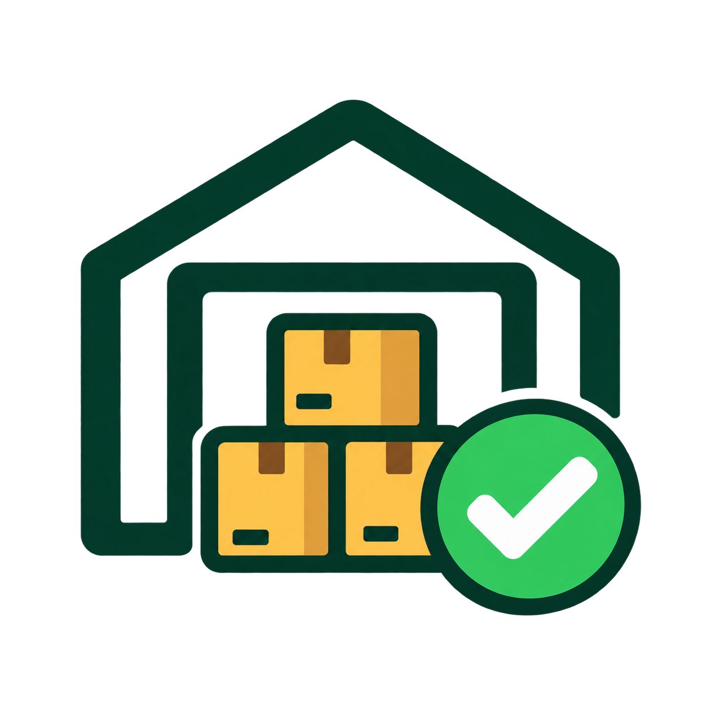
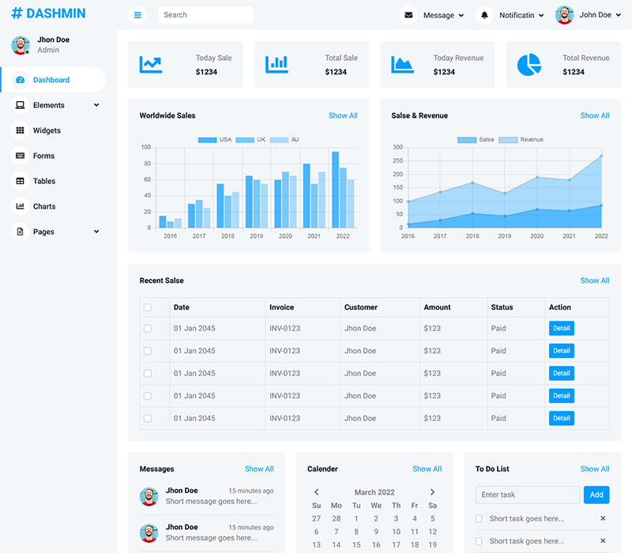

Catat data barang, pantau jumlah stok, dan kelola persediaan UMKM dengan lebih mudah melalui SiGudang.

Pantau jumlah stok barang agar persediaan UMKM lebih mudah diperiksa.
Simpan informasi nama barang, kategori, stok, satuan, dan lokasi dalam satu sistem.
Susun data persediaan agar barang lebih mudah dicatat dan diperiksa.